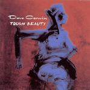

Home Artist links Label link

Dave Corwin - Tough Beauty
| Artist: | Dave Corwin |
| Title: | Tough Beauty |
| Label: | Dihital Complete 783707183800 |
| Length(s): | 59 minutes |
| Year(s) of release: | 2005 |
| Month of review: | [04/2006] |
Line up
Dave Corwin
Tracks
| 1) | Walk In | 4.34
|
| 2) | Red Grass Sand | 4.32
|
| 3) | Glass Tears | 4.32
|
| 4) | Blind Romance | 5.21
|
| 5) | Peace Hotel | 5.02
|
| 6) | Brother Of Darkness | 4.29
|
| 7) | Protector (Goodbye, Mr. Cool) | 5.32
|
| 8) | City Of Desire | 4.31
|
| 9) | Scarred Memory | 4.02
|
| 10) | The Pale Sky | 4.15
|
| 11) | Dance With The Wind | 4.54
|
| 12) | The Road Home | 7.03
|
Summary
The music
This Corwin album is an interesting blend of all kinds of stuff. There is a certain jumpiness and playfullness to especially the guitar play on some tracks that reminds me of Dreadnaught. But most often the guitar refers to a regular rock idiom. The rhythms also derive from straight variations on the rock strategum. The vocals are on the sharp side, with a sometimes nasty twitch. The compositions are mostly in a poprock area. This creates a sound that might just be what you get when you transfer the eighties sound of The Fixx to current times (but a bit more sedate, with the coming of age). But I could be wrong there.
Protector is a fragile sounding ballad type song with sparse but stylish instrumentation. Unfortunately the sharpness of Dave's voice has difficulty staying within the boundaries of the song, failed regularly. This one steps quite far outside the overall style of the album. Dance With The Wind has a sudden Lou Reed feel, mostly caused by tempo and Corwin's diction. As the tempo changes midway the song, the association is shood away (sadly).
The Road Home is the only track to leave the beaten track of the regular song structure, using its added length. There is a wiff of Roy Harper in this song.
Conclusion
Okay, this stuff isn't bad. But it isn't good either. And despite the funny applications we so often hear on guitar, but drums too, the basis of your average track is exactly that: average. The result is an album of which the songs are sort of decent, but their lack of variety starts telling after a bunch of tracks. Corwin's nagging vocals aggrevate this in a way that makes me welcome the end. Better tracks Protector and The Road Home can not prevent this.
© Roberto Lambooy